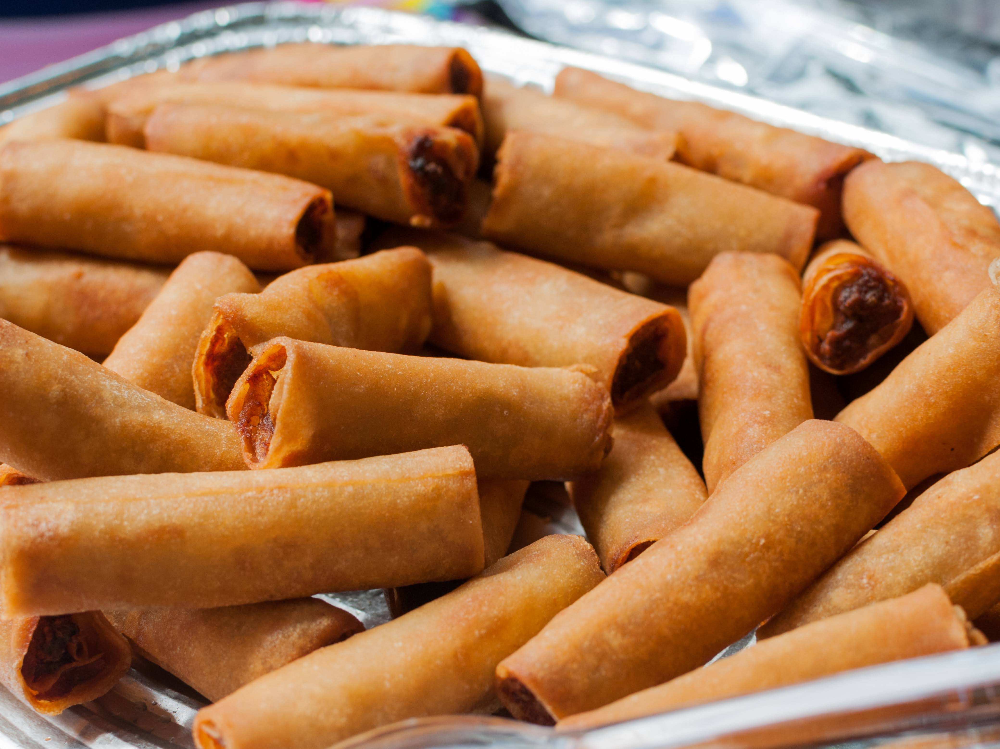

Lumpia Recipe

Lumpia Recipe Description
Lumpia is a popular Filipino snack consisting of savory
spring rolls filled with a mixture of ground meat, vegetables,
and seasonings, all wrapped in a thin pastry. The rolls are
typically deep-fried to a golden crisp, making them a
delicious and crunchy appetizer or side dish.
Lumpia can be enjoyed with a dipping sauce, often sweet chili
or soy-vinegar, enhancing its flavorful filling. Versatile
and easy to prepare, lumpia is a staple at Filipino gatherings
and can be adapted with different fillings, from traditional
pork to vegetarian options.
Ingredients
- 1 lb ground pork (or ground beef/chicken)
- 1 cup carrots, finely shredded
- 1 cup cabbage, finely shredded
- 1/2 cup onions, finely chopped
- 2 cloves garlic, minced
- 1 tablespoon soy sauce
- lumpia wrappers (spring roll wrappers)
- cooking oil (for frying)
Steps
- Prepare the filling:
- In a pan, saute garlic and onionsuntil fragrant.
- Add the ground pork (or chosen meat) and cook until browned.
- Stir in the corrots, cabbage, soy sauce, and black pepper.
Cook for a few more minutes until vegetables are tender.
Remove from heat and let the mixture cool.
- Wrap the Lumpia
- Place a spoonfull of the filling near one corner of a lumpia wrapper.
- Fold the wrapper over the filling, then fold in the sides and roll tightly.
seal the edge with a litle water.
- Fry the lumpia
- Heat oil in a deep pan over medium heat.
- Fry the lumpia in batches until golden brown and crispy(about 3-4 minutes).
- Drain on paper towels to remove excess oil.
- Serve
- Serve hot with a dipping sauce like sweet chili sauce or soy-vinegar sauce.